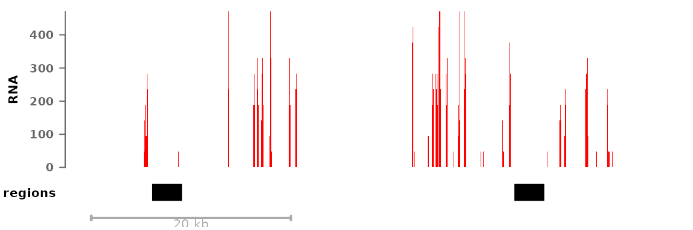
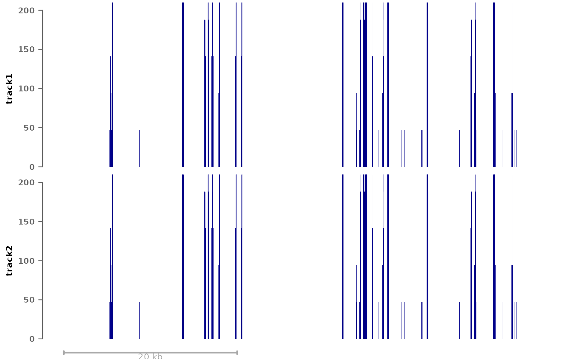

Visualizing signals in a single region
Pierre-Luc Germain
Lab of Statistical Bioinformatics, University of Zürich;D-HEST Institute for Neuroscience, ETH Zürich, SwitzerlandsingleRegionPlot.RmdAbstract
This vignette documents the use of the ‘plotSignalTracks’ to generate genome-browser-like plots of signals and annotations along genomic coordinates in a single given region. It is chiefly a wrapper around the ‘Gviz’ package.
Plotting signals in a region
The plotSignalTracks function is a wrapper around the
Gviz
package, which plots one or more signals along genomic coordinates (in a
genome-browser like fashion). The function lacks the full flexibility of
the Gviz
package, but presents a considerable simpler interface, with automatic
default parameters, etc. It has two essential arguments: a (named) list
of files whose signal to display (can be a mixture of bigwig, bam, or
bed-like files), and the region in which to display the signals (can be
given as a GRanges or as a string). The function then automatically
determines the relevant track type and setting from the file types.
suppressPackageStartupMessages(library(epiwraps))
# get the path to an example bigwig file:
bwf1 <- system.file("extdata/example_rna.bw", package="epiwraps")
plotSignalTracks(list(RNA=bwf1), region="8:22165140-22212326", genomeAxis=TRUE)
# we could plot multiple tracks as follows:
plotSignalTracks(list(track1=bwf1, track2=bwf1), region="8:22165140-22212326")GRanges objects can also be plotted as annotation tracks
alongside other data:
myregions <- GRanges("8", IRanges(c(22166000,22202300), width=3000))
plotSignalTracks(list(RNA=bwf1, regions=myregions), region="8:22165140-22212326")Colors, track display types, and such parameters can either be set for all tracks or for each individual track, for example:
myregions <- GRanges("8", IRanges(c(22166000,22202300), width=3000))
plotSignalTracks(list(RNA=bwf1, regions=myregions), colors=c("red", "black"),
region="8:22165140-22212326")
For bam files, we can also plot individual reads:
# we fetch an example bam file:
bam <- system.file("extdata", "ex1.bam", package="Rsamtools")
plotSignalTracks(c("my bam file"=bam), "seq1:1-1500", type="alignments")Merging signal from different tracks
In addition to being displayed one below the other, data tracks can be combined in different ways. To do this, the tracks can simply be given in a nested fashion:
plotSignalTracks(list(track1=bwf1, combined=c(bwf1,bwf1)),
region="8:22165140-22212326")In this example we are always using the same track, but the first
element (‘track1’) plots the track alone, while the second (‘combined’)
merges the two given tracks. By default, the mean is shown, but this can
be controlled through the aggregation argument. In addition
to usual operations, the tracks can be overlayed on top of one another
(aggregation='overlay'), or shown as a heatmap
(aggregation='heatmap').
Using an EnsDb object
If an EnsDb object is available (see the ensembldb
package for a description of the class and its methods, and the AnnotationHub
package for a convenient way of fetching such annotation objects), two
additional options are available: first, instead of specifying the
region as coordinates, one can specify a gene or transcript name, and
the corresponding region will be fetched. In addition, the genes or
transcripts can be displayed. For example:
# we fetch the GRCh38 Ensembl 103 annotation (this is not run in the vignette,
# as it takes some time to download the annotation the first time is used):
library(AnnotationHub)
ah <- AnnotationHub()
ensdb <- ah[["AH89426"]]
# we plot our previous RNA bigwig file, around the BMP1 locus:
plotSignalTracks(c(coverage=bwf1), region="BMP1", ensdb=ensdb,
transcripts="full")Now we can see that the coverage is nicely restricted to exons, and
that some transcripts/exons are not expressed as highly as others. The
transcripts could also have been collapsed into a gene model using
transcripts="collapsed" (the default).
To display only the gene track, the first argument can simply be omitted.
Further track customization
In addition to the colors and type argument
(and a number of others), which can customize the appearance of tracks,
any additional parameters supported by the respective Gviz
function can be passed through the genes.params (for Gviz’s
GeneRegionTrack), align.params (for Gviz’s
AlignmentsTrack, when plotting individual reads), or
tracks.params (for any other Gviz
DataTrack).
For example, if you wish to manually set the same y-axis range for all data tracks, this can be done with:
plotSignalTracks(list(track1=bwf1, track2=bwf1), region="8:22165140-22212326",
tracks.params=list(ylim=c(0,200)))
Also, in addition to passing filepaths or GRanges, any
Gviz track(s) can be passed (i.e. objects inheriting the
GdObject class) can be passed, enabling full track
customization when needed.
Session info
## R version 4.3.3 (2024-02-29)
## Platform: x86_64-pc-linux-gnu (64-bit)
## Running under: Ubuntu 22.04.4 LTS
##
## Matrix products: default
## BLAS: /usr/lib/x86_64-linux-gnu/openblas-pthread/libblas.so.3
## LAPACK: /usr/lib/x86_64-linux-gnu/openblas-pthread/libopenblasp-r0.3.20.so; LAPACK version 3.10.0
##
## locale:
## [1] LC_CTYPE=C.UTF-8 LC_NUMERIC=C LC_TIME=C.UTF-8
## [4] LC_COLLATE=C.UTF-8 LC_MONETARY=C.UTF-8 LC_MESSAGES=C.UTF-8
## [7] LC_PAPER=C.UTF-8 LC_NAME=C LC_ADDRESS=C
## [10] LC_TELEPHONE=C LC_MEASUREMENT=C.UTF-8 LC_IDENTIFICATION=C
##
## time zone: UTC
## tzcode source: system (glibc)
##
## attached base packages:
## [1] grid stats4 stats graphics grDevices utils datasets
## [8] methods base
##
## other attached packages:
## [1] epiwraps_0.99.84 EnrichedHeatmap_1.32.0
## [3] ComplexHeatmap_2.18.0 SummarizedExperiment_1.32.0
## [5] Biobase_2.62.0 GenomicRanges_1.54.1
## [7] GenomeInfoDb_1.38.8 IRanges_2.36.0
## [9] S4Vectors_0.40.2 BiocGenerics_0.48.1
## [11] MatrixGenerics_1.14.0 matrixStats_1.3.0
## [13] BiocStyle_2.30.0
##
## loaded via a namespace (and not attached):
## [1] RColorBrewer_1.1-3 rstudioapi_0.16.0 jsonlite_1.8.8
## [4] shape_1.4.6.1 magrittr_2.0.3 GenomicFeatures_1.54.4
## [7] rmarkdown_2.26 GlobalOptions_0.1.2 fs_1.6.3
## [10] BiocIO_1.12.0 zlibbioc_1.48.2 ragg_1.3.0
## [13] vctrs_0.6.5 memoise_2.0.1 Rsamtools_2.18.0
## [16] RCurl_1.98-1.14 base64enc_0.1-3 htmltools_0.5.8.1
## [19] S4Arrays_1.2.1 progress_1.2.3 curl_5.2.1
## [22] SparseArray_1.2.4 Formula_1.2-5 sass_0.4.9
## [25] bslib_0.7.0 htmlwidgets_1.6.4 desc_1.4.3
## [28] plyr_1.8.9 Gviz_1.46.1 cachem_1.0.8
## [31] GenomicAlignments_1.38.2 lifecycle_1.0.4 iterators_1.0.14
## [34] pkgconfig_2.0.3 Matrix_1.6-5 R6_2.5.1
## [37] fastmap_1.1.1 GenomeInfoDbData_1.2.11 clue_0.3-65
## [40] digest_0.6.35 colorspace_2.1-0 AnnotationDbi_1.64.1
## [43] textshaping_0.3.7 Hmisc_5.1-2 RSQLite_2.3.6
## [46] filelock_1.0.3 fansi_1.0.6 httr_1.4.7
## [49] abind_1.4-5 compiler_4.3.3 bit64_4.0.5
## [52] doParallel_1.0.17 backports_1.4.1 htmlTable_2.4.2
## [55] BiocParallel_1.36.0 DBI_1.2.2 UpSetR_1.4.0
## [58] highr_0.10 biomaRt_2.58.2 rappdirs_0.3.3
## [61] DelayedArray_0.28.0 rjson_0.2.21 tools_4.3.3
## [64] foreign_0.8-86 nnet_7.3-19 glue_1.7.0
## [67] restfulr_0.0.15 checkmate_2.3.1 cluster_2.1.6
## [70] generics_0.1.3 gtable_0.3.4 BSgenome_1.70.2
## [73] ensembldb_2.26.0 data.table_1.15.4 hms_1.1.3
## [76] xml2_1.3.6 utf8_1.2.4 XVector_0.42.0
## [79] foreach_1.5.2 pillar_1.9.0 stringr_1.5.1
## [82] circlize_0.4.16 dplyr_1.1.4 BiocFileCache_2.10.2
## [85] lattice_0.22-5 deldir_2.0-4 rtracklayer_1.62.0
## [88] bit_4.0.5 biovizBase_1.50.0 tidyselect_1.2.1
## [91] locfit_1.5-9.9 pbapply_1.7-2 Biostrings_2.70.3
## [94] knitr_1.46 gridExtra_2.3 bookdown_0.39
## [97] ProtGenerics_1.34.0 xfun_0.43 stringi_1.8.3
## [100] lazyeval_0.2.2 yaml_2.3.8 evaluate_0.23
## [103] codetools_0.2-19 interp_1.1-6 GenomicFiles_1.38.0
## [106] tibble_3.2.1 BiocManager_1.30.22 cli_3.6.2
## [109] rpart_4.1.23 systemfonts_1.0.6 munsell_0.5.1
## [112] jquerylib_0.1.4 dichromat_2.0-0.1 Rcpp_1.0.12
## [115] dbplyr_2.5.0 png_0.1-8 XML_3.99-0.16.1
## [118] parallel_4.3.3 pkgdown_2.0.8 ggplot2_3.5.0
## [121] blob_1.2.4 prettyunits_1.2.0 jpeg_0.1-10
## [124] latticeExtra_0.6-30 AnnotationFilter_1.26.0 bitops_1.0-7
## [127] viridisLite_0.4.2 VariantAnnotation_1.48.1 scales_1.3.0
## [130] purrr_1.0.2 crayon_1.5.2 GetoptLong_1.0.5
## [133] rlang_1.1.3 cowplot_1.1.3 KEGGREST_1.42.0